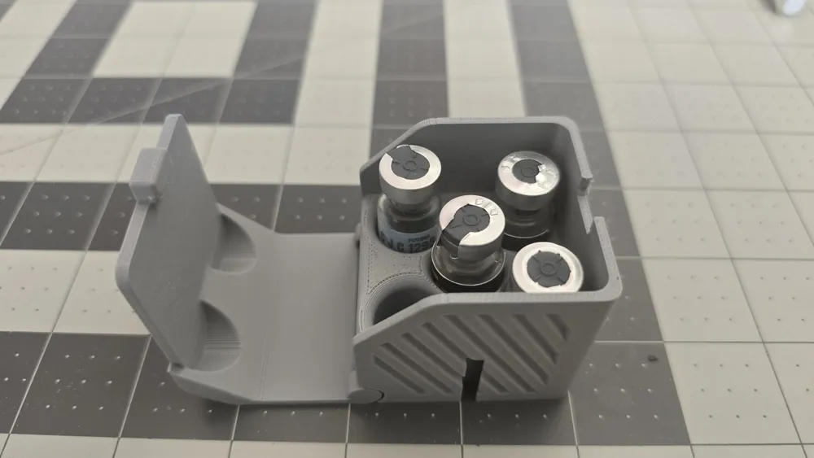

—
—
Protocolos de peptídeos de alto desempenho — formulados com precisão, respaldados por ciência, pensados para resultados reais.
Conheça cada peptídeo do nosso portfólio — mecanismo de ação, benefícios e protocolos baseados em evidência.
Primeiro triplo agonista GIP/GLP-1/Glucagon — até 24% de perda de peso em Fase 2.
▼A Retatrutida é o primeiro triplo agonista do mundo, atuando simultaneamente nos receptores GIP, GLP-1 e Glucagon. O agonismo de GLP-1 reduz apetite e retarda esvaziamento gástrico; GIP potencializa a ação insulínica e melhora sensibilidade metabólica; Glucagon acelera termogênese e oxidação lipídica hepática — resultando em perda de gordura visceral e subcutânea superior a monoterapias.
Peptídeo de cobre — modula 4.000+ genes, estímulo de colágeno e anti-envelhecimento profundo.
▼GHK-Cu (Gly-His-Lys-Cu²⁺) é um tripeptídeo endógeno naturalmente presente no plasma humano que declina com a idade (200ng/mL aos 20 anos → 80ng/mL aos 60+). Liga-se a íons de cobre e modula a expressão de mais de 4.000 genes humanos — ativando genes de reparação e suprimindo genes de inflamação e destruição. Estimula produção de colágeno I, III e IV, elastina, proteoglicanos, decorina e glicosaminoglicanos (GAGs).
Dual agonista GIP/GLP-1 — até 21% de perda de peso em estudos clínicos.
▼Tirzepatida é um dual agonista GIP/GLP-1 (twincretina) que ativa simultaneamente dois receptores incretínicos. O agonismo de GLP-1 reduz apetite via centro hipotalâmico e retarda esvaziamento gástrico. O agonismo de GIP melhora sensibilidade insulínica e potencializa a secreção de insulina glicose-dependente. A combinação resulta em controle glicêmico superior e perda de peso significativamente maior que agonistas simples.
Fragmento do GH (aa 176-191) — lipólise sem efeitos colaterais do hormônio do crescimento.
▼AOD-9604 é o fragmento modificado do GH humano (aminoácidos 176-191) com uma tirosina adicional na posição N-terminal. Retém a atividade lipolítica do GH completo sem afetar receptores de IGF-1 ou crescimento. Estimula lipólise via ativação da lipase hormônio-sensível (HSL) em adipócitos e inibe lipogênese, promovendo oxidação preferencial de gordura como fonte energética.
Análogo de GHRH aprovado pelo FDA — estimula GH natural e reduz gordura visceral.
▼Tesamorelin é um análogo sintético de 44 aminoácidos do GHRH (Growth Hormone-Releasing Hormone) com modificação trans-3-hexenóica para estabilidade. Liga-se ao receptor GHRH na hipófise anterior, estimulando a secreção pulsátil natural de GH. Preserva o feedback negativo fisiológico — ou seja, não dessensibiliza o eixo somatotrófico. O GH liberado estimula lipólise e oxidação de ácidos graxos, especialmente em tecido adiposo visceral.
Coenzima essencial para energia celular, reparo de DNA e ativação de sirtuínas.
▼NAD+ (Nicotinamida Adenina Dinucleotídeo) é cofator essencial em mais de 500 reações enzimáticas, incluindo a cadeia de transporte de elétrons mitocondrial. Declina ~50% entre os 40-60 anos. Ativa as sirtuínas (SIRT1–SIRT7), enzimas desacetilases que regulam envelhecimento, metabolismo e reparo de DNA. Também é substrato das PARPs (Poly ADP-Ribose Polymerases), enzimas de reparo de DNA, e do CD38 (sinalização imune).
Peptídeo mitocondrial — mimético de exercício, ativa AMPK e metabolismo celular.
▼MOTS-c é um peptídeo de 16 aminoácidos codificado pelo DNA mitocondrial (gene 12S rRNA) — um dos poucos peptídeos funcionais derivados do genoma mitocondrial. Ativa a via AMPK (AMP-activated protein kinase), o principal sensor energético celular, mimetizando os efeitos moleculares do exercício físico. Regula metabolismo de glicose e ácidos graxos, melhora sensibilidade insulínica e protege contra estresse metabólico.
Proteção mitocondrial direta — concentra-se 5.000× na mitocôndria, liga-se à cardiolipina.
▼SS-31 (D-Arg-Dmt-Lys-Phe-NH₂) é um tetrapeptídeo mitocondrial-targeted que se acumula >5.000× na membrana interna da mitocôndria. Liga-se seletivamente à cardiolipina, um fosfolipídeo exclusivo da membrana mitocondrial interna, estabilizando a cadeia de transporte de elétrons (Complexos I-IV). Reduz produção de espécies reativas de oxigênio (ROS), restaura produção de ATP e previne a abertura do poro de permeabilidade mitocondrial (mPTP).
Dupla regenerativa — reparo de tendões, músculos, GI e cicatrização acelerada.
▼BPC-157 (Body Protection Compound) é um pentadecapeptídeo derivado de proteínas de proteção gástrica humanas. Estimula produção de óxido nítrico (NO), angiogênese (VEGF), e expressão de GH receptor em tendões. Atua via via FAK-paxillin e JAK-2/STAT-3. TB-500 (Timosina Beta-4) é um peptídeo de 43 aminoácidos que regula actina-G, promovendo migração celular, diferenciação e angiogênese. A combinação gera sinergia: BPC-157 protege e repara, TB-500 acelera migração e remodelação tecidual.
Timosina Beta-4 — regeneração tecidual, migração celular e angiogênese acelerada.
▼TB-500 (Timosina Beta-4) é um peptídeo de 43 aminoácidos presente naturalmente em todas as células humanas. Seu principal mecanismo envolve a regulação de actina-G (proteína estrutural do citoesqueleto), promovendo migração celular rápida para locais de lesão. Estimula angiogênese (formação de novos vasos sanguíneos), diferenciação de células-tronco e redução de inflamação via downregulation de citocinas pró-inflamatórias. Atua em tecidos musculares, tendíneos, ligamentares, cardíacos e dérmicos.
Blend BPC-157 + TB-500 (10mg + 10mg) — regeneração acelerada em dose combinada.
▼Formulação blend otimizada contendo BPC-157 (10mg) e TB-500 (10mg) no mesmo vial, proporcionando sinergia regenerativa com praticidade de dose única. A co-formulação garante proporção ideal entre os dois peptídeos, eliminando a necessidade de reconstituição e administração separadas. O mecanismo é idêntico ao BPC-157 + TB-500 individual, mas com a vantagem da dose pré-balanceada e estabilidade da formulação conjunta.
Blend 4-em-1: GHK-Cu 50mg + BPC 10mg + TB 10mg + KPV 10mg — multifuncional.
▼Formulação exclusiva combinando 4 peptídeos regenerativos sinérgicos: GHK-Cu (50mg) ativa 4.000+ genes de reparação e estimula colágeno; BPC-157 (10mg) protege tecidos e estimula angiogênese via NO; TB-500 (10mg) regula actina e promove migração celular; KPV (10mg) inibe NF-κB, o principal regulador de inflamação sistêmica. A ação combinada abrange remodelação, proteção, regeneração e controle inflamatório.
Tripeptídeo anti-inflamatório derivado do α-MSH — inibe NF-κB, proteção intestinal.
▼KPV (Lys-Pro-Val) é um tripeptídeo derivado da porção C-terminal do α-MSH (alfa-hormônio melanócito-estimulante). Inibe a via NF-κB — o "master switch" da inflamação — impedindo a translocação nuclear e a transcrição de citocinas pró-inflamatórias (TNF-α, IL-1β, IL-6). Também modula a via MAPK/ERK. Ao contrário de imunossupressores, não deprime a função imune — atua como imunomodulador, reduzindo inflamação patológica enquanto preserva defesas.
GHRP seletivo — estimula GH natural sem afetar cortisol, ACTH ou prolactina.
▼Ipamorelin é um pentapeptídeo secretagogo de GH (GHRP) altamente seletivo para o receptor de grelina (GHS-R). Diferente de outros GHRPs como GHRP-2 e GHRP-6, Ipamorelin estimula liberação de GH de forma dose-dependente sem elevar significativamente cortisol, ACTH ou prolactina. Não estimula fome (diferente do GHRP-6). Atua sinergicamente com GHRH (como CJC-1295), amplificando o pulso natural de GH em 3-5× sem dessensibilizar o eixo hipotálamo-hipofisário.
Secretagogos de GH — amplificam o pulso natural em 3-5× sem dessensibilizar.
▼CJC-1295 é um análogo de GHRH (Growth Hormone-Releasing Hormone) com 30 aminoácidos, modificado com Drug Affinity Complex (DAC) para meia-vida prolongada (~8 dias). Estimula a hipófise anterior a secretar GH. Ipamorelin é um pentapeptídeo GHRP (Growth Hormone-Releasing Peptide) altamente seletivo para o receptor de Grelina (GHS-R1a) — amplifica o pulso de GH sem aumentar cortisol, prolactina ou aldosterona. A combinação GHRH + GHRP cria amplificação sinérgica de 3–5× no pulso natural de GH.
Fator de crescimento 3× mais potente — meia-vida de 20-30h, hipertrofia e recuperação.
▼IGF-1 LR3 (Long R3 Insulin-like Growth Factor-1) é uma versão modificada do IGF-1 humano com substituição de Glu³ por Arg³ e extensão de 13 aminoácidos no N-terminal. Estas modificações reduzem a ligação às IGFBPs (proteínas de ligação) em >100×, resultando em 3× mais potência biológica e meia-vida estendida de 20-30h (vs 12-15 min do IGF-1 nativo). Ativa o receptor IGF-1R, promovendo síntese proteica (via PI3K/Akt/mTOR), hiperplasia muscular (criação de novas fibras) e captação de nutrientes.
Nootrópico derivado do ACTH — neuroproteção, BDNF, cognição e foco. Aprovado na Rússia.
▼Semax (Met-Glu-His-Phe-Pro-Gly-Pro) é um heptapeptídeo sintético baseado no fragmento 4-10 do ACTH, desenvolvido pelo Instituto de Genética Molecular da Academia Russa de Ciências. Aumenta significativamente a expressão de BDNF (Brain-Derived Neurotrophic Factor) e seus receptores TrkB, promovendo neuroplasticidade e sobrevivência neuronal. Modula os sistemas serotoninérgico e dopaminérgico sem afinidade adrenocortical — ou seja, não afeta cortisol ou eixo HPA.
Imunomodulador — ativa células T, NK e dendríticas. Aprovado como Zadaxin em 35+ países.
▼Thymosin Alpha 1 é um peptídeo de 28 aminoácidos originalmente isolado da fração 5 do timo (Thymosin Fraction 5) por Allan Goldstein em 1977. Atua como imunomodulador primário: ativa células T helper (CD4+), células NK (Natural Killer), células dendríticas e macrófagos via receptores TLR2, TLR7 e TLR9. Promove maturação de células T imaturas, aumenta produção de IL-2 e IFN-α, e modula o equilíbrio Th1/Th2. Diferente de imunossupressores, TA1 equilibra a resposta imune sem suprimi-la.
Combo GHRH+GHRP — estímulo de GH por vias complementares, sem dessensibilização.
▼Combinação de Tesamorelin (GHRH — estimula hipófise via receptor GHRH-R) e Ipamorelin (GHRP — ativa receptor de grelina GHS-R1a) em um único vial. A ação dual cria amplificação sinérgica: Tesamorelin "abre a porta" para secreção de GH e Ipamorelin "empurra" a liberação. Tesamorelin aprovado FDA como Egrifta — Ipamorelin seletivo sem elevar cortisol, prolactina ou aldosterona. Resultado: pico de GH fisiológico 3-5× superior ao basal.
Body Protection Compound — proteção gástrica, angiogênese e regeneração tecidual.
▼BPC-157 (Body Protection Compound-157) é um pentadecapeptídeo de 15 aminoácidos derivado de uma proteína de proteção gástrica humana. Estimula produção de óxido nítrico (NO) via eNOS, promove angiogênese (VEGF) e ativa as vias FAK-paxillin e JAK-2/STAT-3 para migração e proliferação celular. Única entre peptídeos: é estável em suco gástrico (pH 1-2), permitindo administração oral eficaz para condições gastrointestinais. Aumenta expressão de receptor de GH em tendões e ligamentos.
Agonista melanocortina MC3R/MC4R — aumenta desejo e excitação sexual. Aprovado FDA (Vyleesi).
▼PT-141 (Bremelanotide) é um peptídeo cíclico heptapeptídeo, metabolito ativo do Melanotan II, que atua como agonista dos receptores melanocortina MC3R e MC4R no sistema nervoso central (hipotálamo). Diferente do Viagra/Cialis (periférico/vascular), PT-141 age centralmente — ativando vias dopaminérgicas e oxitocinérgicas responsáveis pelo desejo e excitação sexual. É o primeiro tratamento aprovado que age diretamente no circuito neural do desejo, não apenas na mecânica vascular.
Agonista melanocortina — bronzeamento, libido e controle de apetite em um peptídeo.
▼Melanotan II é um análogo cíclico do α-MSH (alfa-hormônio melanócito-estimulante) que atua como agonista não-seletivo dos receptores melanocortina MC1R, MC3R, MC4R e MC5R. Via MC1R: estimula melanogênese nos melanócitos, aumentando produção de eumelanina (pigmento escuro) e promovendo bronzeamento. Via MC3R/MC4R: efeito pró-erétil central e supressão de apetite. Desenvolvido na Universidade do Arizona para fotoproteção em populações de pele clara.
Hormônio reprodutivo — estimula LH, FSH e testosterona naturalmente via eixo HPG.
▼Kisspeptin-10 é a forma ativa de 10 aminoácidos do neuropeptídeo Kisspeptin, codificado pelo gene KISS1. Liga-se ao receptor GPR54 (KISS1R) nos neurônios GnRH do hipotálamo, estimulando secreção pulsátil de GnRH → LH → FSH → Testosterona/Estradiol. É considerado o "gatilho mestre" do eixo HPG (Hipotálamo-Hipófise-Gonadal). Também atua no processamento sexual cerebral — o cérebro "interpreta" estímulos sexuais com mais intensidade.
Bioregulador de cartilagem (Ala-Glu-Asp) — regeneração articular e anti-envelhecimento celular.
▼Cartalax (Ala-Glu-Asp) é um tripeptídeo bioregulador da família Khavinson, desenvolvido no Instituto de Gerontologia de São Petersburgo, Rússia. Atua por regulação epigenética: penetra no núcleo celular e interage com regiões promotoras de genes relacionados à cartilagem e envelhecimento. Reduz marcadores de senescência celular (p16, p21, p53), aumenta SIRT6 (sirtuína de longevidade), Ki-67 (proliferação) e inibe MMP-9 (enzima que degrada matriz extracelular), preservando cartilagem e tecido conjuntivo.
Master antioxidante do corpo — detox, proteção celular, skin brightening e suporte imunológico.
▼Glutathione (γ-L-Glutamil-L-Cisteinil-Glicina) é um tripeptídeo endógeno presente em virtualmente todas as células humanas — sendo o antioxidante intracelular mais abundante e poderoso do organismo. Atua como cofator essencial da Glutathione Peroxidase (GPx) e Glutathione S-Transferase (GST), neutralizando espécies reativas de oxigênio (ROS), peróxidos lipídicos e xenobióticos. Recicla vitaminas C e E de volta à forma ativa. É o principal agente de Fase II de detoxificação hepática — conjugando toxinas, metais pesados e metabólitos para excreção. Inibe a tirosinase, reduzindo produção de melanina (efeito skin brightening).
Fragmento puro do GH humano — lipólise potente e direcionada, sem efeitos do GH completo.
▼HGH Fragment 176-191 é o segmento C-terminal do hormônio do crescimento humano (aminoácidos 176 a 191), responsável pela atividade lipolítica do GH. Atua diretamente nos adipócitos via ativação da lipase hormônio-sensível (HSL) e inibição da Acetil-CoA Carboxilase, estimulando a beta-oxidação de ácidos graxos. Diferente do GH completo, não se liga ao receptor de GH (GHR) e não ativa a via JAK2/STAT5 — portanto não afeta IGF-1, glicose, insulina, nem causa retenção hídrica ou crescimento de tecidos. É uma "queima de gordura pura" sem os efeitos sistêmicos do GH.
Análogo de amilina de longa ação — controle de apetite, saciedade e esvaziamento gástrico.
▼Cagrilintide é um análogo acilado da amilina humana com meia-vida estendida (~160h), permitindo dosagem semanal. A amilina é co-secretada com insulina pelas células beta pancreáticas. Atua nos receptores AMY1 e AMY3 no tronco encefálico (área postrema e núcleo do trato solitário), promovendo saciedade central, retardando o esvaziamento gástrico e suprimindo a secreção pós-prandial de glucagon. Mecanismo complementar e sinérgico com agonistas de GLP-1.
Duplo agonista GLP-1/Glucagon — metabolismo acelerado e redução de gordura hepática.
▼Mazdutide (LY3305677/IBI362) é um análogo de oxintomodulina recombinante com atividade dual nos receptores GLP-1 e Glucagon. A ativação do GLP-1R promove saciedade, secreção de insulina dependente de glicose e retardo do esvaziamento gástrico. A ativação do receptor de glucagon (GcgR) aumenta a termogênese, a oxidação de ácidos graxos no fígado e o gasto energético basal. Esta combinação resulta em perda de peso superior à de agonistas GLP-1 puros, com benefício adicional na redução de gordura hepática (NASH/MASLD).
Inibidor de NNMT — ativa metabolismo celular, aumenta NAD+ e queima gordura.
▼5-Amino-1MQ é uma molécula pequena que inibe seletivamente a enzima NNMT (Nicotinamide N-methyltransferase). A NNMT consome metil-nicotinamida (precursor de NAD+) e SAM (S-adenosilmetionina), reduzindo a disponibilidade de ambos. Ao inibir NNMT, 5-Amino-1MQ aumenta os níveis intracelulares de NAD+ (ativando SIRT1 e metabolismo mitocondrial) e SAM (suportando metilação de DNA e processos epigenéticos). Reduz a diferenciação e acúmulo lipídico em adipócitos, promovendo lipólise e aumento do gasto energético.
Stack beleza 3-em-1: GHK-Cu 50mg + BPC-157 10mg + TB-500 10mg — pele, colágeno e regeneração.
▼GLOW é um blend triplo que combina três peptídeos regenerativos com mecanismos complementares. GHK-Cu (50mg) — peptídeo de cobre que regula mais de 4.000 genes ligados a colágeno, elastina, glicosaminoglicanos e remodelação tecidual. BPC-157 (10mg) — peptídeo gástrico que acelera angiogênese, modula NO e promove cicatrização. TB-500 (10mg) — timosina beta-4 que regula actina, migração celular e regeneração tecidual. Juntos, atuam em pele, cabelo, unhas e tecido conjuntivo.
Fator de Crescimento Mecânico PEGilado — hipertrofia muscular e recuperação acelerada.
▼PEG-MGF (PEGylated Mechano Growth Factor) é a forma PEGilada do MGF, uma variante de splice do IGF-1 expressa em resposta a estresse mecânico muscular. O MGF nativo é produzido no músculo após exercício intenso e ativa células satélites (células-tronco musculares), essenciais para reparo e hipertrofia. A PEGilação (adição de polietilenoglicol) estende a meia-vida de minutos para horas, permitindo ação sistêmica prolongada. Promove proliferação de mioblastos, síntese proteica e regeneração de fibras musculares danificadas.
Secretagogo potente de GH — massa magra, recuperação e cardioproteção.
▼Hexarelin é um hexapeptídeo sintético e um dos GHRPs (Growth Hormone Releasing Peptides) mais potentes. Atua no receptor de secretagogos de GH (GHS-R1a / receptor de grelina) no hipotálamo e hipófise, estimulando liberação robusta de GH de forma dose-dependente. Diferente do Ipamorelin, Hexarelin também eleva cortisol e prolactina em doses altas, indicando menor seletividade. Possui propriedades cardioprotetoras únicas — ativa GHS-R1a cardíaco, protegendo contra isquemia-reperfusão e promovendo função ventricular.
Peptídeo bioregulador testicular — suporte à produção natural de testosterona.
▼Testagen é um peptídeo bioregulador curto (Asp-Glu-Gly) da escola Khavinson de peptídeos bioreguladores. Atua como regulador epigenético específico do tecido testicular, interagindo com regiões promotoras de genes envolvidos na esteroidogênese. Suporta a função das células de Leydig (produção de testosterona) e células de Sertoli (espermatogênese). Estimula a produção endógena de testosterona sem supressão do eixo HPG, diferente da TRT exógena.
Peptídeo bioregulador cardíaco — proteção e regeneração do miocárdio.
▼Cardiogen (Ala-Glu-Asp-Arg) é um tetrapeptídeo bioregulador da escola Khavinson, específico para o tecido cardíaco. Atua como regulador epigenético que interage com DNA de cardiomiócitos, modulando a expressão de genes envolvidos na função contrátil, reparo celular e proteção contra estresse oxidativo. Promove regeneração do miocárdio, melhora a função ventricular e protege contra danos isquêmicos. Estudos demonstram normalização da estrutura e função cardíaca em modelos de envelhecimento.
Peptídeo bioregulador imunomodulador — longevidade, imunidade e hepatoproteção.
▼Livagen (Lys-Glu) é um dipeptídeo bioregulador da escola Khavinson com propriedades imunomoduladoras e hepatoprotetoras. Atua como regulador epigenético que descondensa heterocromatina em linfócitos, reativando genes silenciados pelo envelhecimento. Estimula a imunidade celular (células T, NK e dendríticas), modula a produção de citocinas e tem efeito hepatoprotetor (protege e regenera hepatócitos). Estudos longitudinais de Khavinson demonstram aumento de longevidade com uso periódico.
Peptídeo bioregulador prostático — saúde e função da próstata.
▼Prostamax é um peptídeo bioregulador curto da escola Khavinson, específico para o tecido prostático. Atua como regulador epigenético que modula a expressão de genes envolvidos na proliferação celular prostática, inflamação local e equilíbrio androgênico tecidual. Normaliza a função das células epiteliais e estromais da próstata, reduz hiperplasia e melhora marcadores de saúde prostática. Particularmente indicado para homens acima de 40 anos como parte de protocolos anti-aging e prevenção de HPB.
Peptídeo mitocondrial — neuroproteção, cardioproteção e longevidade celular.
▼Humanin é um peptídeo de 24 aminoácidos codificado pelo DNA mitocondrial (mtDNA), sendo o primeiro MDP (Mitochondrial-Derived Peptide) descoberto. Exerce efeitos citoprotetores através de múltiplas vias: liga-se ao IGFBP-3 (liberando IGF-1), ativa a via STAT3 (sobrevivência celular), inibe BAX (anti-apoptótico) e modula a via AMPK. Demonstra neuroproteção potente contra toxicidade de beta-amiloide (Alzheimer), cardioproteção contra isquemia-reperfusão e melhora na sensibilidade à insulina. Seus níveis declinam significativamente com a idade.
Agonista ERR — mimético de exercício, metabolismo e endurance.
▼SLU-PP-332 é uma molécula pequena agonista dos receptores ERR (Estrogen-Related Receptors) — ERRα, ERRβ e ERRγ. Os ERRs são fatores de transcrição que regulam genes envolvidos no metabolismo oxidativo, biogênese mitocondrial e oxidação de ácidos graxos — os mesmos programas transcricionais ativados pelo exercício físico. SLU-PP-332 mimetiza os efeitos moleculares do exercício aeróbico, aumentando a capacidade oxidativa do músculo esquelético, a biogênese mitocondrial (PGC-1α) e a transição de fibras tipo II para tipo I (resistência).
Delta Sleep-Inducing Peptide — qualidade do sono profundo e neuroproteção.
▼DSIP (Delta Sleep-Inducing Peptide) é um nonapeptídeo originalmente isolado do sangue venoso cerebral de coelhos durante sono induzido. Modula múltiplos sistemas de neurotransmissores — GABAérgico, serotoninérgico e glutamatérgico — promovendo a arquitetura natural do sono, especialmente o aumento da duração de ondas delta (sono profundo / estágio N3). Não é um sedativo — normaliza a fisiologia do sono. Também exerce efeitos neuroprotetores, modulação do estresse oxidativo, efeitos analgésicos e regulação do ritmo circadiano. Possui propriedades adaptogênicas contra estresse crônico.
N-Acetyl Selank — ansiolítico nootropico sem sedação, melhora cognitiva e BDNF.
▼NA Selank (N-Acetyl Selank) é a forma estabilizada do Selank, um peptídeo sintético análogo da tuftsin (fragmento de imunoglobulina). A N-acetilação confere maior estabilidade contra peptidases, prolongando a meia-vida. Modula os sistemas GABAérgico (sem efeito sedativo), serotoninérgico e dopaminérgico, produzindo efeito ansiolítico sem dependência ou comprometimento cognitivo. Aumenta expressão de BDNF (Brain-Derived Neurotrophic Factor) — fator de crescimento neuronal — melhorando neuroplasticidade, aprendizado e memória. Aprovado na Rússia como ansiolítico de prescrição.
Estamos no início de uma das maiores revoluções da medicina moderna. Peptídeos terapêuticos estão redefinindo o que é possível em longevidade, composição corporal e regeneração celular.
Diferente de fármacos sintéticos tradicionais, peptídeos são moléculas biológicas que o próprio corpo já reconhece. Atuam com alta seletividade em receptores específicos — sem os efeitos colaterais sistêmicos de drogas convencionais. São "chaves moleculares" desenhadas pela evolução.
O número de publicações científicas sobre peptídeos terapêuticos triplicou na última década. Desde a aprovação da Semaglutida (2017) e Tirzepatida (2022), o interesse institucional explodiu — com Eli Lilly, Novo Nordisk e dezenas de biotechs investindo bilhões em pesquisa.
Peptídeos como MOTS-c, NAD+, SS-31, GHK-Cu e os bioreguladores Khavinson estão criando uma nova categoria: a longevidade programável. Pela primeira vez, temos ferramentas que atuam nas raízes do envelhecimento — mitocôndrias, telômeros, senescência celular e expressão gênica.
A próxima onda são os triplo-agonistas (Retatrutida), peptídeos mitocondrial-targeted (SS-31/Elamipretide), e bioreguladores epigenéticos (Cartalax, Epithalon). Estamos testemunhando o nascimento de uma medicina preventiva de precisão que vai redefinir como envelhecemos.
Publicações em journals de primeiro nível que fundamentam a era dos peptídeos terapêuticos
Jastreboff et al. demonstraram que o agonista triplo GLP-1/GIP/Glucagon alcançou resultados sem precedentes em redução de gordura corporal. Primeiro estudo a validar o conceito de agonismo triplo simultâneo em humanos. Publicado no New England Journal of Medicine.
Pickart et al. mapearam a capacidade do GHK-Cu de modular mais de 4.000 genes humanos — revertendo perfis de expressão gênica associados ao envelhecimento. O peptídeo de cobre demonstrou potencial regenerativo em pele, tendões, pulmão e tecido nervoso.
Reynolds et al. demonstraram que MOTS-c atua como um peptídeo de sinalização mitocondrial que mimetiza os benefícios metabólicos do exercício físico. Melhora sensibilidade à insulina, biogênese mitocondrial e resistência ao estresse metabólico — abrindo caminho para a longevidade programável.
Resultados em humanos mostraram que SS-31 restaura a função da cadeia de transporte de elétrons mitocondrial. Com acúmulo de 5.000× na membrana interna, o peptídeo protege contra dano oxidativo na raiz — oferecendo potencial terapêutico para doenças relacionadas ao envelhecimento.
Pesquisas consolidaram o mecanismo de ação do BPC-157: promoção de angiogênese (VEGF), proteção endotelial e aceleração do reparo em tendões, ligamentos e mucosa gastrointestinal. O peptídeo demonstrou ser um potente agente de healing em múltiplos modelos experimentais.
Cada lote é testado por laboratório terceirizado acreditado (Janoshik Analytical). Certificados completos disponíveis mediante solicitação.
Certificado completo com QR de verificação disponível mediante solicitação.
Solicitar Certificado →Cases de armazenamento projetados e impressos em 3D, com encaixes precisos para frascos de peptídeos. Controle de temperatura e umidade integrado, proteção contra luz e impacto.

Case compacto impresso em 3D com encaixes precisos para 5 frascos de 3mL. Tampa articulada com trava de clipe, textura antiderrapante e design ultra-portátil. Protege seus peptídeos contra impacto e luz. Pode ser enviado junto com os vials no mesmo pedido.
Cada protocolo é personalizado para seus objetivos. Selecione a categoria, preencha o formulário e nossa equipe monta o plano ideal — com dosagens, calendário e suporte completo.
1. Selecione o peptídeo ou categoria de interesse
2. Nossa equipe analisa seu perfil e objetivos
3. Receba um protocolo completo com dosagens, reconstituição e calendário semanal
Peptídeos de alta pureza com certificado de análise (CoA). Água bacteriostática. Seringas de insulina. Guia de reconstituição ilustrado. Cronograma semanal personalizado. Suporte via WhatsApp durante todo o ciclo.
Envio refrigerado com embalagem térmica especializada para preservar estabilidade. Entrega para todo o Brasil em 3-5 dias úteis. Peptídeos liofilizados: armazenar 2-8°C.
Emagrecimento (Retatrutida, Tirzepatida, AOD-9604) · Regeneração (BPC-157, TB-500, GHK-Cu) · Longevidade (NAD+, MOTS-c, SS-31) · Hormônio do Crescimento (CJC-1295/Ipa, Tesamorelina) · Imunidade (TA1, KPV)
Material educativo. Peptídeos de pesquisa destinados a uso investigacional. Consulte sempre um profissional de saúde antes de iniciar qualquer protocolo.
Material educativo. Este não é um serviço médico. Consulte sempre um profissional de saúde.